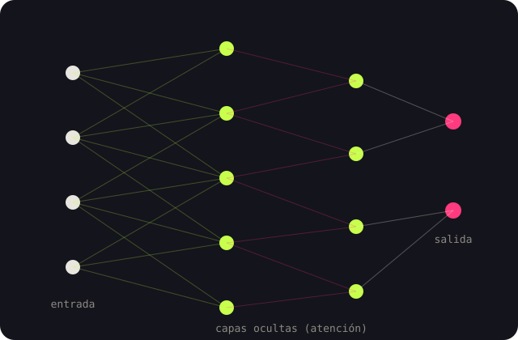
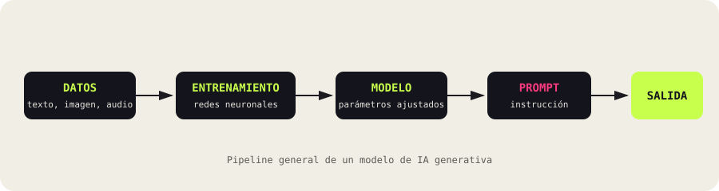

Cómo un modelo aprende a predecir, palabra por palabra, píxel por píxel, el siguiente elemento más probable — y por qué eso alcanza para escribir, dibujar y programar.
Una rama de la IA que no clasifica ni predice sobre datos existentes, sino que produce contenido nuevo: texto, imágenes, audio, video y código.
Durante años, la inteligencia artificial se dedicó sobre todo a tareas de clasificación: reconocer un rostro, filtrar un correo, recomendar un producto. La IA Generativa da un paso distinto: aprende la estructura estadística de sus datos de entrenamiento y la usa para producir ejemplos nuevos que nunca existieron, pero que son estadísticamente plausibles.
GPT · Claude · Gemini · DALL·E · Midjourney
Modelo de lenguaje (LLM): red entrenada con
enormes volúmenes de texto para predecir la siguiente palabra.
Transformer:
arquitectura de 2017 basada en el mecanismo de atención.
Prompt:
la instrucción que el usuario escribe.
Token:
la unidad mínima de texto que el modelo procesa.

Todo modelo generativo recorre la misma ruta general, desde los datos crudos hasta el contenido final.

El modelo procesa billones de palabras (o millones de imágenes) y aprende, mediante ajuste de parámetros, a predecir qué viene después. Después se afina con retroalimentación humana (RLHF) para que sus respuestas sean más útiles y seguras.
Al recibir un prompt, el modelo produce su salida token por token (texto) o revirtiendo un proceso de ruido (modelos de difusión, usados por DALL·E o Midjourney para generar imágenes a partir de una descripción).
Video: “But what is a GPT?”, 3Blue1Brown — explicación visual del funcionamiento interno de un transformer.
La misma tecnología se adapta a sectores muy distintos, con herramientas ya en uso hoy.
Khanmigo actúa como tutor virtual, guiando al estudiante con preguntas en vez de dar la respuesta directa.
AlphaFold predice estructuras de proteínas, acelerando el diseño de nuevos medicamentos.
GitHub Copilot sugiere y completa código dentro del propio editor del programador.
Equipos de mercadeo generan borradores de campañas y contenido para redes en minutos.
Midjourney y Runway generan bocetos visuales y video como punto de partida creativo.
Chatbots generativos resuelven consultas frecuentes con lenguaje natural y contexto.
Ninguna tecnología con este alcance llega sin una cara incómoda; vale la pena mirar ambas.
Cada modelo se especializa en un tipo de contenido y responde a una organización distinta.
| Modelo | Organización | Tipo de contenido | Arquitectura base |
|---|---|---|---|
| GPT-4 / GPT-4o | OpenAI | Texto, código, imagen, voz | Transformer |
| Claude | Anthropic | Texto, código, documentos | Transformer |
| Gemini | Google DeepMind | Texto, imagen, audio, video | Transformer multimodal |
| DALL·E / Midjourney | OpenAI / Midjourney Inc. | Imágenes a partir de texto | Modelo de difusión |
| GitHub Copilot | GitHub / OpenAI | Código | Transformer ajustado a código |
Para profundizar en los conceptos técnicos tratados en el artículo que acompaña esta página.
La IA Generativa ya escribe, dibuja y programa junto a nosotros. Comprender su funcionamiento —y sus límites— es lo que distingue a quien la usa bien de quien solo la usa.